- Introduction
- Preliminary Setup
- Creating JDE Library Bundle
- Install the JDE libraries bundle into your Maven repository
- Preparing Maven for PortX - JDE Connector
- Adding PortX JDE license to your Mule runtime
- JD Edwards EnterpriseOne™ Server configuration requirements
- Enterprise Server connection considerations
- Configuring the INI Files for JDE Connector
- AnyPoint Studio Project - PortX JDE Connector
- PortX JDE Connector – Demo Applications
- Appendix A : Required JARs by Tools Release
- Appendix B : Additional Information
Introduction
The PortX JDE Connector leverages the internal capabilities of Oracle’s JD Edwards EnterpriseOne™ solution to a broader extent, and uses the power of Oracle’s Java Dynamic Connector to provide interoperability with JD Edwards EnterpriseOne™ and external systems.
After reading this guide, you should be able to accomplish the following scenarios:
-
Log into JD Edwards EnterpriseOne™
-
Invoke a Business Function (BSFN) on the server by passing it parameters.
-
Invoke a Business Function (BSFN) on the server using Transaction Processing.
-
Invoke a UBE by name.
-
Check a UBE call’s status asynchronously.
-
Poll Events.
-
Poll EDI Events.
-
Log out.
At design time, the PortX JDE Connector allows you to discover functions by name providing full access to all Business Function signatures. Given that discovery is a heavy duty process, the Connector manages a cache repository for all function’s metadata used at least once.
The results of a function call will be injected into the flow as a Map containing key-value pairs with the invocation’s output values. This approach gives the end user freedom of choice to construct complex flows and manage custom exception strategies.
Prerequisites
This document assumes that you are familiar with Oracle’s JD Edwards EnterpriseOne™ basics, Mule the Anypoint™ Studio interface.
Requirements
-
Mule 4.1 server Runtime or higher
-
Maven 3.3.9 or higher (do not use the embedded Maven for AnyPoint Studio)
-
For a easy installation tutorial see How to install Maven for Windows
-
-
Access to your Oracle’s JD Edwards EnterpriseOne™ installation java libraries
-
As the connector is based on Oracle’s JD Edwards EnterpriseOne interoperability solution, the below settings need to be reviewed/changed.
-
XML Dispatch Kernel
-
The XML CallObject kernel
-
The XML Transaction kernel
-
The XML List kernel
-
XMLLookupInfo section for XML Request type 7 inside jde.ini To activate Submit UBE.
-
This configuration will need to be done by the CNC Administrator for your JD Edwards EnterpriseOne™ system. For more information, refer to the JD Edwards EnterpriseOne™ Tools Interoperability Guide
Preliminary Setup
In addition to meeting the requirements listed in the Prerequisites section, a bundle has to be created to establish a connection to the JDE Enterprise Server. This bundle will be created only for the first time and it can be reused in other applications.
This adapter is a bundle of JAR files that comes with the JD Edwards EnterpriseOne™ distribution.
These steps illustrate how to create bundle connector component so that you can include in the flow that needs connect to JDE Enterprise Server for your specific JD Edwards EnterpriseOne™ Tools Release
Creating JDE Library Bundle
The PortX JDE Connector makes use of the libraries of the local JDE Tools release. In order to simplify dependency management for the Mule 4 application, you need to package JDE libraries together into a lib bundle using the provided JDE Libraries Bundle Builder Tool.
-
Download the JDE Libraries bundle builder tool using your username and password as credentials
-
Execute java -jar JDELibrariesBundleBuilderTool-1.0.0.jar with the following parameters (from terminal / command prompt)
-
The following parameters apply
-
--destDir for the path where the bundle will be created.
-
--jdbcDriver for the full path and filename of the JDBC Driver that applies to you JD Edwards EnterpriseOne™ installation.
-
--libDir for the full path containing your JDE Tool release libraries
-
--localRepo for the path to your local Maven repository (typically ~/.m2/repository)
-
--version for the bundle version (1.0.0 for current release candidate)
-
e.g.:
java -jar JDEToolToBuildLibBundle-1.0.0.jar --destDir "/tmp" –jdbcDriver "/opt/jde/JDBC_Vendor_Drivers/ojdbc7.jar" –libDir "/opt/jde/workingDir/ServerFiles" –version "1.0.0" --localRepo "/home/user/.m2/repository"
NOTE : All libraries in this path will be added to the library. It is recommended that you copy the required JARs as per your Tools Release, from the libraries path of either the JD Edwards EnterpriseOne™ Enterprise Server, or a Development Client that has been installed from your JD Edwards EnterpriseOne™ Enterprise Server installation). See Appendix A for a detailed list of all files required per your Tools Release
Once completed the resulting bundle will be located at, following the sample above, /tmp/jde-lib-bundle-1.0.0.jar
Install the JDE libraries bundle into your Maven repository
-
Execute the following to make the bundle available in your Maven Repository
mvn install:install-file -Dfile=/tmp/jde-lib-bundle-1.0.1.jar-DgroupId=com.jdedwards -DartifactId=jde-lib-bundle -Dversion=1.0.0 -Dpackaging=jar
Preparing Maven for PortX - JDE Connector
-
Update your settings.xml file (typically ~/.m2 path)
-
In the servers section, add the following:
-
Replace the user name and password provided to you via email
-
<server>
<id>portx-repository-releases</id>
<username>youruser</username>
<password>yourpassword</password>
</server>Adding PortX JDE license to your Mule runtime
PortX JDE Connector license can be added two ways.
-
Copy the license file in the project folder src/main/resources
-
Copy the license file to Mule installation folder mule/conf
JD Edwards EnterpriseOne™ Server configuration requirements
To ensure correct operation of all of the JDE Connector features the Enterprise Server requires the following jde.ini file settings:
Please refer to JD Edwards EnterpriseOne Tools Interoperability Guide to check updates, and also provides the different .dll extensions for other platforms.
| The below .dll files, all relate to the Microsoft Windows platform. |
This configuration must be done by CNC administrator. Refer to JD Edwards EnterpriseOne Tools Interoperability Guide
-
Ensure that sufficient processes are available for the XML List Kernel
[JDENET_KERNEL_DEF16]
krnlName=XML List Kernel
dispatchDLLName=xmllist.dll
dispatchDLLFunction=_XMLListDispatch@28
maxNumberOfProcesses=3
numberOfAutoStartProcesses=1-
Ensure that sufficient processes are available for the XML Dispatch Kernel
[JDENET_KERNEL_DEF22]
dispatchDLLName=xmldispatch.dll
dispatchDLLFunction=_XMLDispatch@28
maxNumberOfProcesses=1
numberOfAutoStartProcesses=1-
Ensure that sufficient processes are available for the XML Service Kernel
[JDENET_KERNEL_DEF24]
krnlName=XML Service KERNEL
dispatchDLLName=xmlservice.dll
dispatchDLLFunction=_XMLServiceDispatch@28
maxNumberOfProcesses=1
numberOfAutoStartProcesses=0-
Ensure that the LREngine has a suitable output storage location and sufficient disk allocation
[LREngine]
System=C:\JDEdwardsPPack\E920\output
Repository_Size=20
Disk_Monitor=YES-
Ensure that the XML Kernels are correctly defined
[XMLLookupInfo]
XMLRequestType1=list
XMLKernelMessageRange1=5257
XMLKernelHostName1=local
XMLKernelPort1=0
XMLRequestType2=callmethod
XMLKernelMessageRange2=920
XMLKernelHostName2=local
XMLKernelPort2=0
XMLRequestType3=trans
XMLKernelMessageRange3=5001
XMLKernelHostName3=local
XMLKernelPort3=0
XMLRequestType4=JDEMSGWFINTEROP
XMLKernelMessageRange4=4003
XMLKernelHostName4=local
XMLKernelPort4=0
XMLKernelReply4=0
XMLRequestType5=xapicallmethod
XMLKernelMessageRange5=14251
XMLKernelHostName5=local
XMLKernelPort5=0
XMLKernelReply5=0
XMLRequestType6=realTimeEvent
XMLKernelMessageRange6=14251
XMLKernelHostName6=local
XMLKernelPort6=0
XMLKernelReply6=0
XMLRequestType7=ube
XMLKernelHostName7=local
XMLKernelMessageRange7=380
XMLKernelPort7=0
XMLKernelReply7=1Enterprise Server connection considerations
-
Enable Predefined JDENET Ports in JDE.INI
When there is a firewall between the Mulesoft ESB and the Enterprise Server, set the PredfinedJDENETPorts setting to 1 in the JDE.INI file of the Enterprise Server. This setting enables JDENET network process to use a predefined range of TCP/IP ports. This port range starts at the port number that is specified by serviceNameListen and ends at the port that is calculated by the equation serviceNameListen = maxNetProcesses - 1. You must open these ports in a firewall setup to successfully connect the Mulesoft ESB to the Enterprise Server.
Please refer to JD Edwards EnterpriseOne Tools Security Administration Guide to check updates.
Configuring the INI Files for JDE Connector
The PortX JDE Connector relies on Oracle’s Java Dynamic Connector to establish the link to the server. In order to achieve this, setting the following standard configuration files are required. It is recommended that these be copied from the server to the development machine, as they will be required in all projects using the PortX JDE Connector.
-
jdbj.ini
-
jdeinterop.ini
-
jdelog.properties
-
tnsnames.ora (for Oracle RDBMS based installations only)
These files are distributed with both Development Clients and/or Enterprise Server modules. Addtional Configuration requirements per file are :
JDEINTEROP.INI There is addtional configurations needed inside JDEINTEROP.INI. You need to add the following section:
[EVENT]
Property |
Explanation |
lockEventsYN=N |
Flag used by the JDE Connector to lock transactions events before consumed. It must be used if the connector run in more that one Mule instance. |
specialEDITables=<F470462> |
List of EDI tables without EDLN in its column definitions (between < and >) |
validateEnterpriseServicesWith=BOTH |
(Optional) This options is used by the Test Connection to Validate Enterprise Servicies. The values are BSFN, UBE, BOTH or NONE. |
validateEnterpriseServicesUBEName=R0008P_XJDE0001 |
(Optional) This is the UBE used to validate the connection. |
If you need to run the application on CloudHub, you will need to add the section OCM_SERVERS with the servers that the JDE Connector will use in the connection. The JDE Servers Names are in the column OMSRVR of F98611 table. To add these servers on the OCM_SERVERS section you will need to follow this format is simple: JDE Server Name = FQDN or IP
[OCM_SERVERS]
Property |
Explanation |
jdeserver01=jdeserver01.yourdomain.com |
The JDE Connector will ask to the DNS Server the IP of jdeserver01.yourdomain.com. Then, The JDE Connector will use this IP for each reference to jdeserver01 |
jdeserver02=10.168.45.1 |
The JDE Connector will use the IP 10.168.45.1 for each reference to jdeserver02 |
eg.
[EVENT]
lockEventsYN=N
specialEDITables=<F470462>
validateEnterpriseServicesWith=BOTH
validateEnterpriseServicesUBEName=R0008P_XJDE0001[OCM_SERVERS]
jdeserver01=jdeserver01.yourdomain.com
jdeserver02=10.168.45.1NOTE : You can use the DNS name or the IP Address
JDELOG.PROPERTIES (optional)
NOTE : See JD Edwards EnterpriseOne™ documentation for usage
[E1LOG]
FILE=/tmp/jdelog/jderoot.log
LEVEL=SEVERE
FORMAT=APPS
MAXFILESIZE=10MB
MAXBACKUPINDEX=20
COMPONENT=ALL
APPEND=TRUE
#Logging runtime and JAS above APP level will be helpful for application developers.
#Application developers should use this log as a substitute to analyze the flow of events
#in the webclient.
[JASLOG]
FILE=/tmp/jdelog/jas.log
LEVEL=APP
FORMAT=APPS
MAXFILESIZE=10MB
MAXBACKUPINDEX=20
COMPONENT=RUNTIME|JAS|JDBJ
APPEND=TRUE
#Logging runtime and JAS at DEBUG level will be helpful for tools developers.
#Tool developers should use this log ato debug tool level issues
[JASDEBUG]
FILE=/tmp/jdelog/jasdebug.log
LEVEL=DEBUG
FORMAT=TOOLS_THREAD
MAXFILESIZE=10MB
MAXBACKUPINDEX=20
COMPONENT=ALL
APPEND=TRUEAnyPoint Studio Project - PortX JDE Connector
| It is recommended that you update AnyPoint Studio before starting with a PortX JDE Connector project. |
Using the Connector
You can use the connector to
-
Invoke a BSFN on JD Edwards Enterprise Server.
-
Invoke a BSFN on JD Edwards Enterprise Server using Transaction Processing.
-
Submit a UBE.
-
Get UBE Job Status for a UBE using JDE Job Id.
-
Get Outbound Events from a JD Edwards Application.
-
Get EDI Event from EDI Application.
Creating a new Mule Project
Create a new Mule Project with Mule Server 4.1.1 EE or greater as runtime:
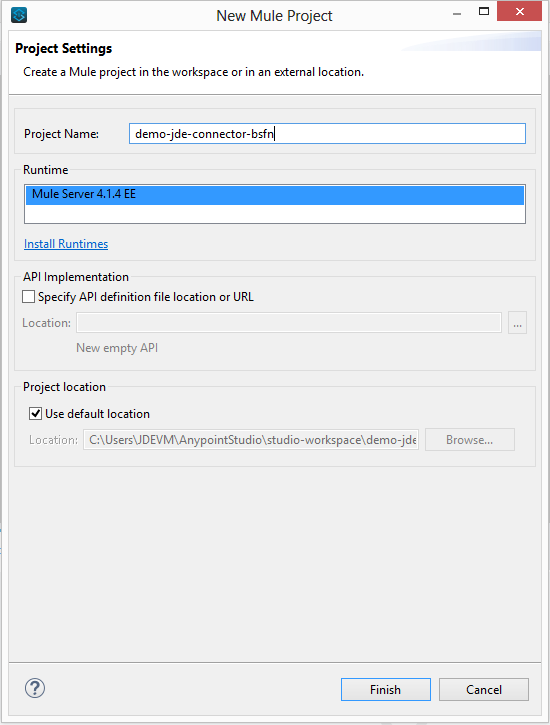
Project Dependencies
In you pom.xml, add the following to you repositories section :
<repository>
<id>portx-repository-releases</id>
<name>portx-repository-releases</name>
<url>https://portx.jfrog.io/portx/portx-releases</url>
</repository>Add the following to you dependencies section :
<dependency>
<groupId>com.modus</groupId>
<artifactId>mule-jde-connector</artifactId>
<version>2.0.0</version>
<classifier>mule-plugin</classifier>
</dependency>
<dependency>
<groupId>com.jdedwards</groupId>
<artifactId>jde-lib-bundle</artifactId>
<version>1.0.0</version>
<classifier>mule-4</classifier>
</dependency>Add or update the following to you plugins section :
<plugin>
<groupId>org.mule.tools.maven</groupId>
<artifactId>mule-maven-plugin</artifactId>
<version>$\{mule.maven.plugin.version}</version>
<extensions>true</extensions>
<configuration>
<sharedLibraries>
<sharedLibrary>
<groupId>com.jdedwards</groupId>
<artifactId>jde-lib-bundle</artifactId>
</sharedLibrary>
</sharedLibraries>
</configuration>
</plugin>Required files
Copy the JD Edwards EntrpriseOne™ configuration files to the following folders within the project:
-
Project Root
-
src/main/resources
| If there is a requirement to use different configuration files per environment, you may create separate folders under src/main/resources corresponding to each environment as shown below. |
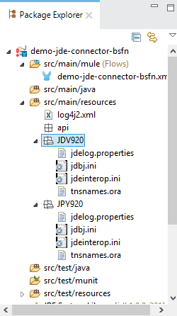
The mule-artifact.json file needs to be updated for each environment as below
{
"minMuleVersion": "4.1.4",
"classLoaderModelLoaderDescriptor": {
"id": "mule",
"attributes": {
"exportedResources": [
"JDV920/jdeinterop.ini",
"JDV920/jdbj.ini",
"JDV920/tnsnames.ora",
"JDV920/jdelog.properties",
"JPY920/jdeinterop.ini",
"JPY920/jdbj.ini",
"JPY920/tnsnames.ora",
"JPY920/jdelog.properties",
"log4j2.xml"
],
"exportedPackages": [
"JDV920",
"JPY920"
],
"includeTestDependencies": "true"
}
}
}Other Considerations
To redirect the JD Edwards EntrpriseOne™ Logger to Mule Logger (allowing you to see the JDE activity in both Console and JDE files defined in the jdelog.properties, you may add the following Async Loggers to log4j2.xml file.
<AsyncLogger name="org.mule.modules.jde.internal.JDEConnector" level="DEBUG" />
<AsyncLogger name="org.mule.modules.jde.api.MuleHandler" level="DEBUG" />Troubleshooting
If you are having trouble resolving all dependencies,
-
Shut down AnyPoint Studio
-
Run the following command in the project root folder from the terminal/command prompt,
mvn clean install
-
Open AnyPoint Studio and check dependencies again.
Configure the Global Element
To use the PortX JDE Connector in your Mule application, you must configure a global element that can be used by the connector (read more about Global Elements).
Open the Mule flow for the project, and select the Global Elements tab at the bottom of the Editor Window.
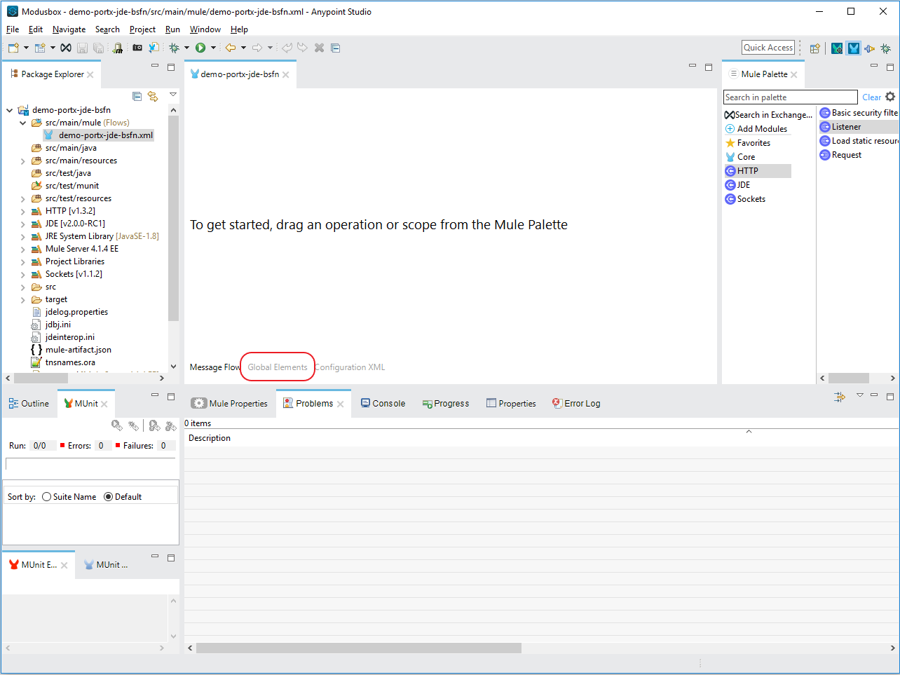
Click Create
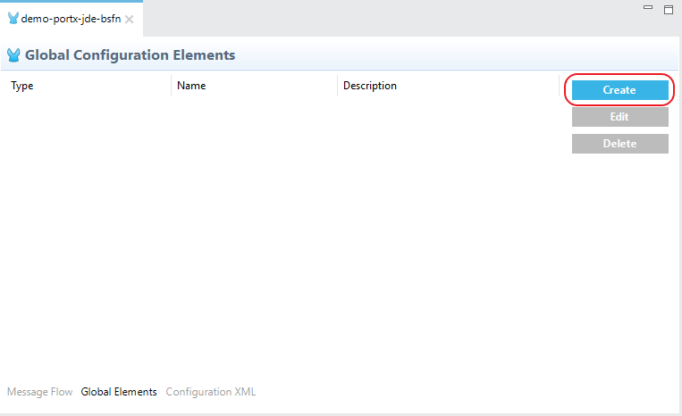
Type “JDE” in the filter edit box, and select “JDE Config”. Click OK
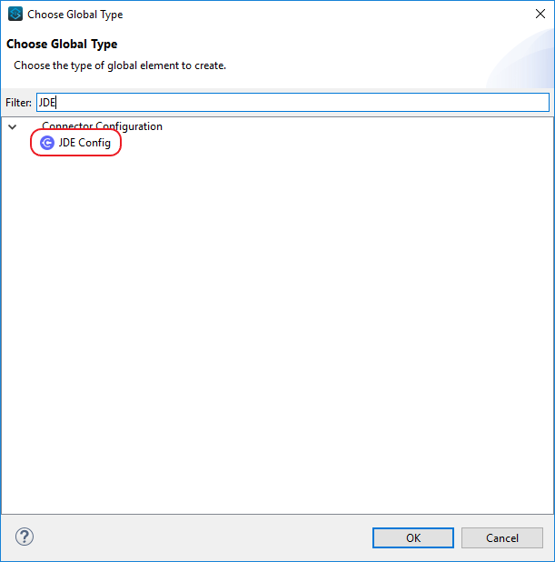
On the General tab, enter the required credential and environment
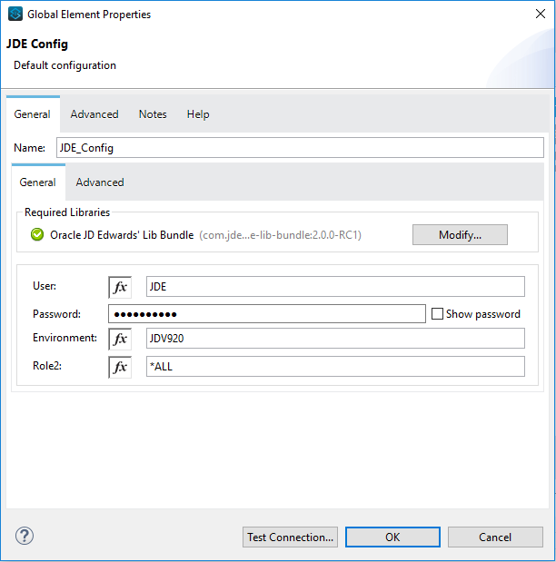
Click Test Connection. You should see the following message appear.
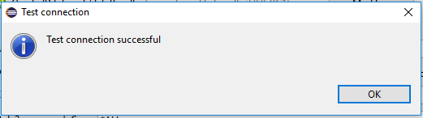
Creating a HTTP Listener for your flow
NOTE : This use case example will create a simple flow to get the address book name from the Address Book table (A/B) invoking the Master Business Function (MBF) on Oracle’s JDE EnterpriseOne Server.
Go back to the Message Flow tab
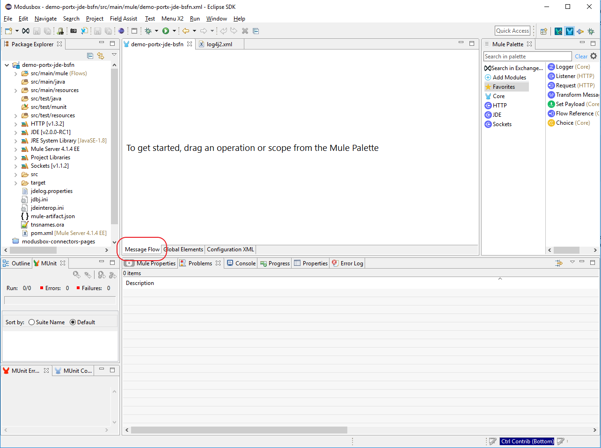
From the Mule Palette (typically top right), select HTTP, and drag Listener to the canvas
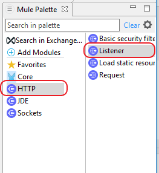
Select the HTTP Listener component from the canvas, and inspect the properties window
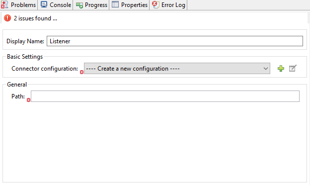
The connector requires a Connector Configuration. Click on Add to create a connector configuration.
Give the HTTP endpoint a more descriptive name like get-AddressBookName-http-endpoint and press OK to go back to the global HTTP endpoint dialog box:
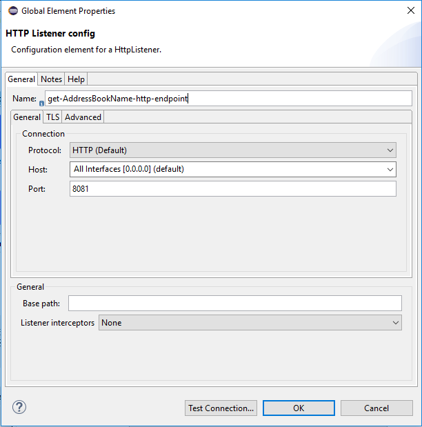
Add a path to the URL eg. getaddressbookname.
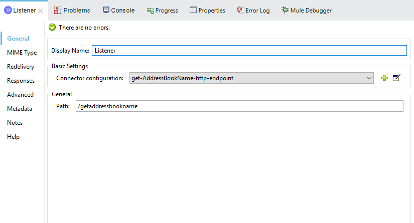
Click on the MIME Type link, and add a parameter for addressno.
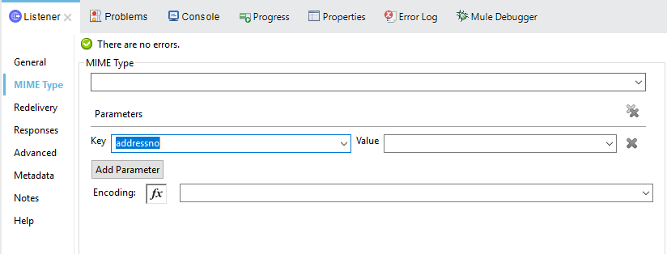
Save the project. The connector will be ready to process requests.
Invoke a Business Functions
Locate the JDE Connector, and select Call BSFN. Drag this to the canvas.
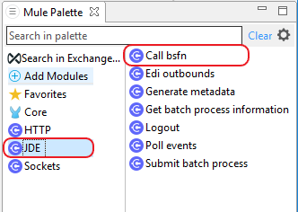
Drag the connector over to the canvas. Select it and review the properties window. Give it a meaningful name eg. Call AddressBookMasterMBF.
Under the General section, click on the drop-down for Business Function Name.
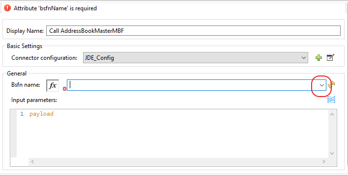
NOTE : If it is the first time you are selecting a function, this might take a while, as no information has been cached yet. It will need to build a list of all functions available. Please be patient. The status bar (bottom right) will display the following while it is retrieving the metadata.
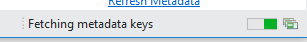
Troubleshooting
If the operation fails (possibly due to a timeout), you will see the below message
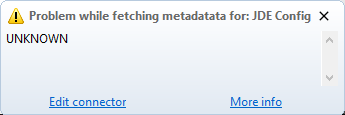
Please review the timeout settings in Anypoint Studio's Preferences.
To do this go the the Window > Preferences menu
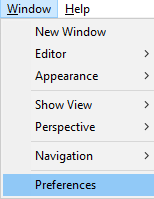
Go to Anypoint Studio > DataSense and change the DataSense Connection Timeout setting as below
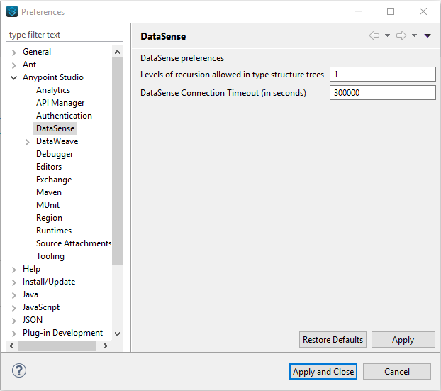
Go to Anypoint Studio > Tooling and change the Default Connection Timeout and Default Read Timeout settings as below
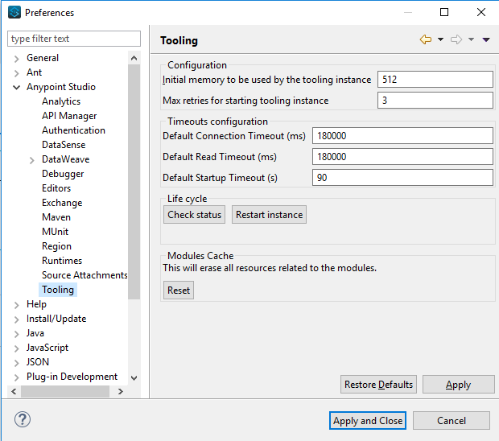
Setting Parameters
After the system has retrieved the required metadata, select AddressBookMasterMBF from the list. The specification metadata will be retrieved from the enterprise server, and put into the project metadata repository.
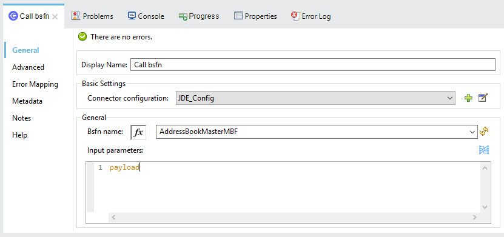
You may now assign the input parameters. You can do this by either entering the payload values manually, or via the “Show Graphical View” button.
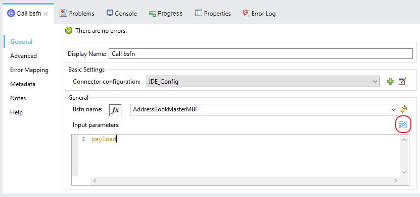
Drag the inputs to outputs, or double-click the output parameter to add to your edit window, and change as required. Be sure to map your query parameter to the function mnAddressBookNumber
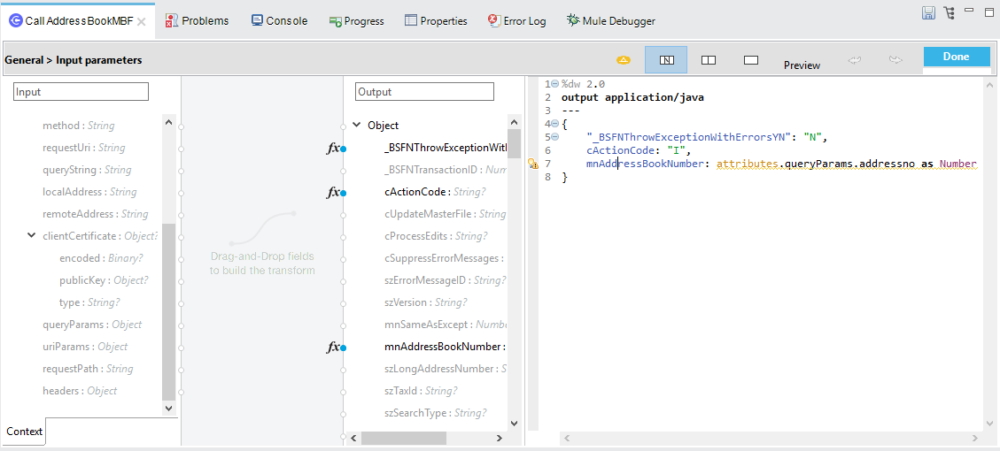
Set Payload Output
In the Mule Palette, you can either select Core, scroll down to Transformers or type “Payload” in the search bar.
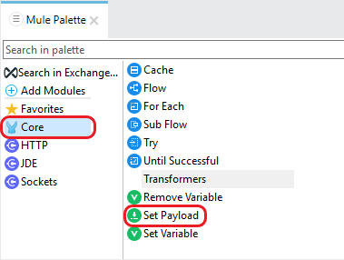
Drag and drop the Set Payload to your canvas.
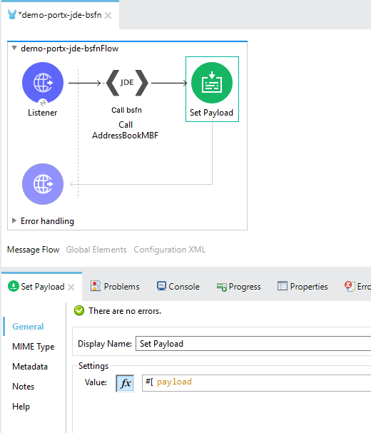
Select the Set Payload component, and review the properties.
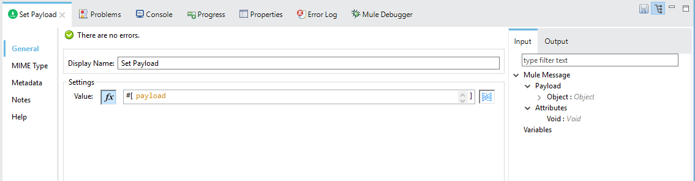
Change the payload to reflect the desired output, and save the project
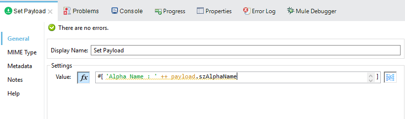
Testing the Mule Flow
To Test your flow, you need to start the Mule application. Go to the Run menu, and select Run.
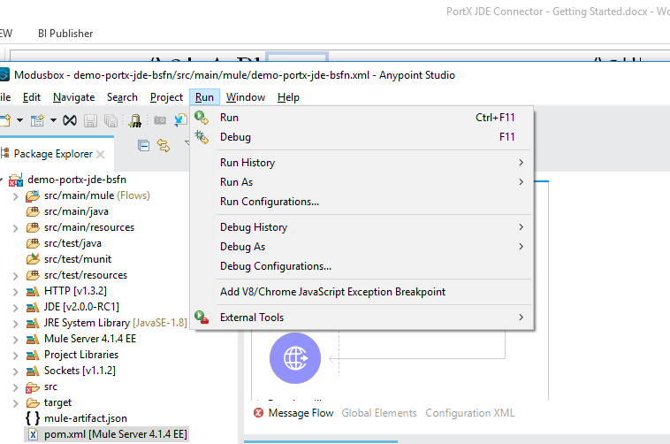
After the project has been deployed, you can test you flow by typing the URL into a web browser eg. http://localhost:8081/getaddressbookname?addressno=1
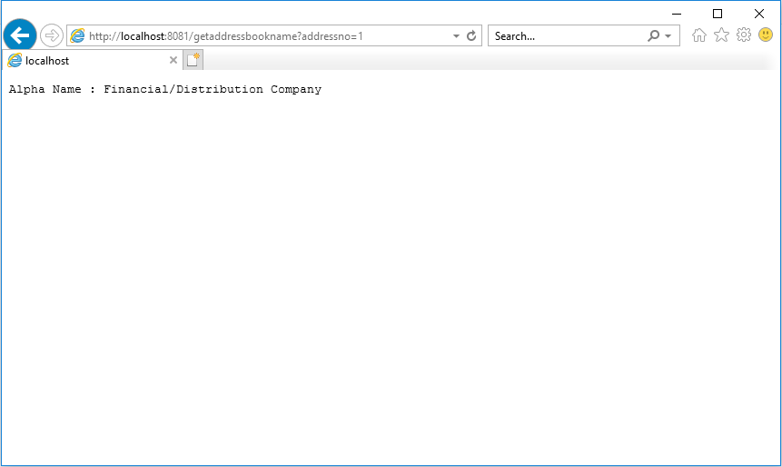
PortX JDE Connector – Demo Applications
Appendix A : Required JARs by Tools Release
Tools Release 8.98
Copy these files:
-
ApplicationAPIs_JAR.jar
-
ApplicationLogic_JAR.jar
-
Base_JAR.jar
-
BizLogicContainer_JAR.jar
-
BizLogicContainerClient_JAR.jar
-
BusinessLogicServices_JAR.jar
-
castor.jar
-
commons-httpclient-3.0.jar
-
commons-logging.jar
-
Connector.jar
-
EventProcessor_JAR.jar
-
Generator.jar
-
j2ee1_3.jar
-
JdbjBase_JAR.jar
-
JdbjInterfaces_JAR.jar
-
JdeNet_JAR.jar
-
jmxremote.jar
-
jmxremote_optional.jar
-
jmxri.jar
-
log4j.jar
-
ManagementAgent_JAR.jar
-
Metadata.jar
-
MetadataInterface.jar
-
PMApi_JAR.jar
-
Spec_JAR.jar
-
System_JAR.jar
-
SystemInterfaces_JAR.jar
-
xmlparserv2.jar
Tools Releases 9.1 prior Update 4
Copy these files:
-
ApplicationAPIs_JAR.jar
-
ApplicationLogic_JAR.jar
-
Base_JAR.jar
-
BizLogicContainer_JAR.jar
-
BizLogicContainerClient_JAR.jar
-
BusinessLogicServices_JAR.jar
-
castor.jar
-
commons-httpclient-3.0.jar
-
commons-logging.jar
-
Connector_JAR.jar
-
EventProcessor_JAR.jar
-
Generator.jar
-
JdbjBase_JAR.jar
-
JdbjInterfaces_JAR.jar
-
JdeNet_JAR.jar
-
jmxremote.jar
-
jmxremote_optional.jar
-
jmxri.jar
-
ManagementAgent_JAR.jar
-
Metadata.jar
-
MetadataInterface.jar
-
PMApi_JAR.jar
-
Spec_JAR.jar
-
System_JAR.jar
-
SystemInterfaces_JAR.jar
-
xmlparserv2.jar
Tools Releases 9.1 Update 4 and later updates
Copy these files:
-
ApplicationAPIs_JAR.jar
-
ApplicationLogic_JAR.jar
-
Base_JAR.jar
-
BizLogicContainer_JAR.jar
-
BizLogicContainerClient_JAR.jar
-
BusinessLogicServices_JAR.jar
-
castor.jar
-
commons-codec.jar
-
commons-lang2.6.jar
-
commons-logging.jar
-
Connector.jar
-
EventProcessor_JAR.jar
-
Generator_JAR.jar
-
httpclient.jar
-
httpcore.jar
-
httpmime.jar
-
j2ee1_3.jar
-
JdbjBase_JAR.jar
-
JdbjInterfaces_JAR.jar
-
JdeNet_JAR.jar
-
jmxremote.jar
-
jmxremote_optional.jar
-
jmxri.jar
-
ManagementAgent_JAR.jar
-
Metadata.jar
-
MetadataInterface.jar
-
PMApi_JAR.jar
-
Spec_JAR.jar
-
System_JAR.jar
-
SystemInterfaces_JAR.jar
-
xml-apis.jar
-
xmlparserv2.jar
Tools Releases 9.2 and later
Copy these files:
-
ApplicationAPIs_JAR.jar
-
ApplicationLogic_JAR.jar
-
Base_JAR.jar
-
BizLogicContainer_JAR.jar
-
BizLogicContainerClient_JAR.jar
-
BusinessLogicServices_JAR.jar
-
commons-codec.jar
-
castor.jar
-
commons-lang2.6.jar
-
commons-logging.jar
-
Connector.jar
-
EventProcessor_JAR.jar
-
Generator.jar
-
httpclient.jar
-
httpcore.jar
-
httpmime.jar
-
j2ee1_3.jar
-
JdbjBase_JAR.jar
-
JdbjInterfaces_JAR.jar
-
JdeNet_JAR.jar
-
jmxremote.jar
-
jmxremote_optional.jar
-
jmxri.jar
-
ManagementAgent_JAR.jar
-
Metadata.jar
-
MetadataInterface.jar
-
PMApi_JAR.jar
-
Spec_JAR.jar
-
System_JAR.jar
-
SystemInterfaces_JAR.jar
-
xerces.jar
-
xml-apis.jar
-
xmlparserv2.jar
Appendix B : Additional Information
Common Call Business Function parameters
There is four common parameters used to invoke a Business Function:
Parameter |
Input/Output |
Type |
Description |
_BSFNThrowExceptionWithErrorsYN |
Input |
STRING |
Values: Y, The flow will throw Runtime Exception with cause: org.mule.modules.jde.exceptions.CallBSFNException. |
_BSFNReturnCode |
Output |
INTEGER |
Values: 0: Processed Correctly, 1: There is warnings, 2: There is errors. |
_BSFNNumberOfErrors |
Output |
INTEGER |
Number of errors |
_BSFNDetailErrors |
Output |
STRING |
Detail of the error. It return a XML representation of CallObjectErrorList |
Usage :
Handling Errors
In Mule 4, all thrown errors will be displayed in the Type selection of the Error Handler. Simple select the errors you want to handle, and process them.
NOTE : All JD Edwards related errors will start with JDE:
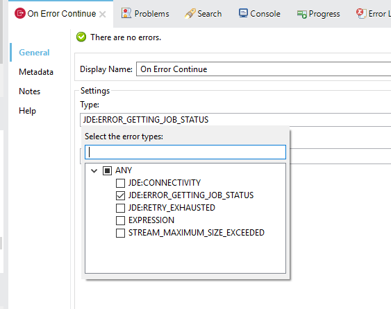
This is an example of CallObjectErrorItem object:
<com.jdedwards.system.kernel.JdeNetCallObjectErrorList>
<mErrors>
<com.jdedwards.system.kernel.CallObjectErrorItem>
<mErrorId>0</mErrorId>
<mDDItem>1212</mDDItem>
<mLineNumber>315</mLineNumber>
<mFileName>b0100094.c</mFileName>
<mSubText>�</mSubText>
<mAlphaDescription>Error: Address Number Already Assigned</mAlphaDescription>
<mGlossaryText>CAUSE . . . . The Address Number entered is already assigned.
RESOLUTION. . Enter an Address Number that is not already assigned.
</mGlossaryText>
<mErrorLevel>1</mErrorLevel>
</com.jdedwards.system.kernel.CallObjectErrorItem>
<com.jdedwards.system.kernel.CallObjectErrorItem>
<mErrorId>11</mErrorId>
<mDDItem>018A</mDDItem>
<mLineNumber>544</mLineNumber>
<mFileName>rtk_ddvl.c</mFileName>
<mSubText>Search Type|Y|01|ST�</mSubText>
<mAlphaDescription>Error: Y not found in User Defined Code 01 ST�</mAlphaDescription>
<mGlossaryText>CAUSE . . . . Search Type Y was not found in User Defined Code
for system 01 , type ST� .
RESOLUTION. . Enter a valid Search Type or use Visual Assist to search
for a valid value.
</mGlossaryText>
<mErrorLevel>1</mErrorLevel>
</com.jdedwards.system.kernel.CallObjectErrorItem>
</mErrors>
<mBsfnErrorCode>2</mBsfnErrorCode>
</com.jdedwards.system.kernel.JdeNetCallObjectErrorList>Defining Data Selection
-
The parameter Selection is used to define UBE Data Selection.
-
The sentence is similar to a WHERE clause of an SQL statement.
-
The Selection syntax is:
-
table.column_name operator [value|table.column_name];
-
-
The table must be a JDE table that belongs to the main view of the UBE.
-
Column Name must be a JDE Data Item Alias.
-
The following operators can be used in the Selection :
| Operator | Description |
|---|---|
= |
Equal |
<> |
Not equal |
<> |
Not equal |
> |
Greater than |
< |
Less than |
>= |
Greater than or equal |
⇐ |
Less than or equal |
BETWEEN |
Between an inclusive range |
NOT BETWEEN |
Not Between an exclusive range |
IN |
To specify multiple possible values for a column |
NOT IN |
To exclude multiple possible values for a column |
-
The values can be literals or other table columns.
-
Literals can be String or Number
-
The sentence can include the AND and/or the OR conditions
-
To override the default precedence you need to use parenthesis as
-
C1 AND (C2 OR C3)
-
The sentence only accept one level of Parenthesis.
-
For example, this is a valid sentence because the maximum level of Parenthesis opened is 1.
C1 AND (C2 OR C3) AND (C4 OR C5)
otherwise, this is an invalid sentences because the maximum level of Parenthesis opened is 2.
C1 AND (C2 OR (C3 AND C4))
Examples:
F4211.KCOO = '00001' AND F4211.DOCO > 10332
F4211.KCOO = '00001' AND F4211.DOCO >= 10332
F4211.KCOO = '00001' AND F4211.DOCO <= 10332
F4211.KCOO = '00001' AND F4211.DOCO <> 10332
F4211.KCOO = '00001' AND ( F4211.DCTO = 'SO' OR F4211.DCTO = 'SI' )
F4211.KCOO = '00001' AND F4211.DCTO IN ('SO','SI')
F4211.KCOO = '00001' AND F4211.DCTO NOT IN ('SO','SI')
F4211.KCOO = '00001' AND F4211.DOCO BETWEEN 1022 AND 400
F4211.KCOO = '00001' AND F4211.DOCO NOT BETWEEN 1022 AND 400
F4211.MCU = F4211.EMCU AND F4211.DOCO NOT BETWEEN 1022 AND 400